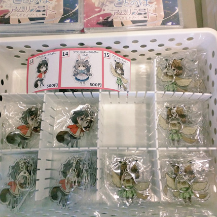
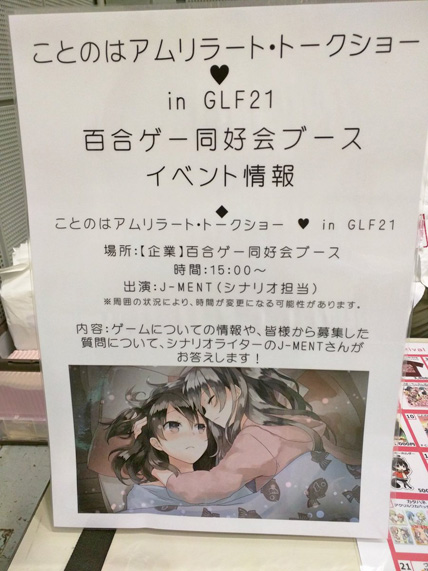

みなさん、
Bonantagon!（ボーナンターゴン）
2017年8月25日発売されました、純百合アドベンチャー『ことのはアムリラート』。
もう、プレイしてくれましたか？
先日、10月9日Girls Love Festival21（以下GLF21）にて、シナリオ担当のJ-MENTさんとプロデューサーの古賀さんのスペシャルトークショーが行われました。
今日はその様子を余すところなくレポートしたいと思います！！
当日はさわやかな秋晴れに恵まれて、会場も大賑わい。
ことのはアムリラートが入っている百合ゲー愛好会もたくさんのお客様にご覧いただけている様子。特にルカのアクリルキーホルダーはすぐに完売とのことで、多くの方に愛して頂けて本当にうれしいです。

トークショー１時間前、本日出演のお2人はさっそくメール選びにとりかかります。
予想を上回る量を頂いたようでメールの束と格闘するお2人。
「こんなに答えられないよぅ」と、驚きながらも一通一通、丁寧に読み込んでいらっしゃるJ-MENTさんが印象的でした。
そしてメール作業を続けながらの打ち合わせが始まります。
丹念に段取りを確認しつつ「GLF21なのに、おじさん2人で大丈夫かな」とお互いを励ましあう一幕も。

その間にもスタッフさんが会場や音響セッティングを進めていきます。
本番10分前、その作業を見守っていたJ-MENTさんが「はやく、始まらないかな……」とボソッと呟かれており、静かに緊張されている姿が失礼ながら大変健気でありました（笑）。